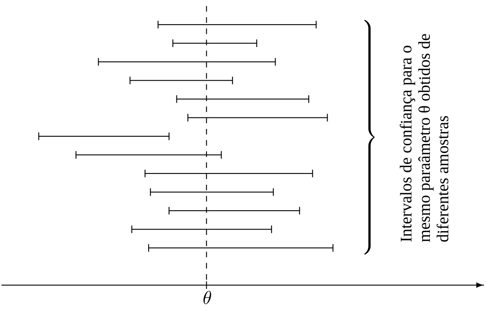
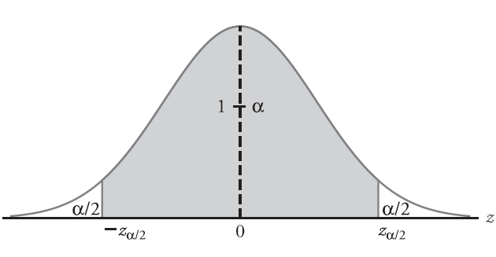
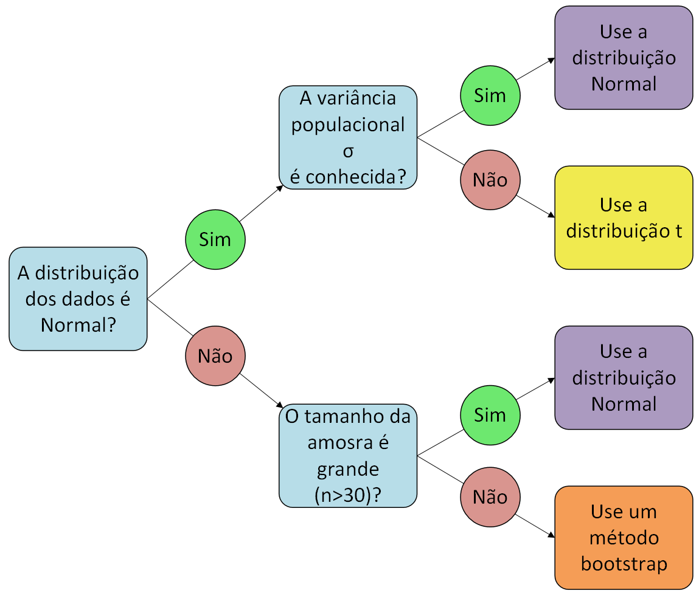

Intervalos de Confiança Para a Média de Uma Amostra
ESTAT0011 – Estatística Aplicada
Prof. Dr. Sadraque E. F. Lucena
sadraquelucena@academico.ufs.br
Inferência Estatística
- Em geral, quando fazemos um estudo, coletamos dados de uma amostra para entender algo sobre uma população inteira.
- O processo de usar amostras para tirar conclusões sobre os parâmetros de populacionais é chamado de inferência estatística.
- A inferência estatística nos permite fazer generalizações sobre uma população com base em dados de uma amostra e se divide em duas áreas principais:
- Estimação (pontual e intervalar)
- Testes de hipóteses
Estimação Pontual
- Suponha que queremos estimar a altura média dos alunos da UFS.
- Por questões de tempo e de custo, só conseguimos coletar uma amostra de 100 alunos.
- A média que calcularmos a partir dessa amostra (\(\overline{X}\)) é uma estimativa para a média real da população (\(\mu\)).
- Por causa do erro amostral, a média da amostra quase nunca é exatamente igual à média da população. Ela está perto, mas não é a mesma coisa.
- É aí que entram os Intervalos de Confiança.
Intervalos de Confiança
- Intervalos de confiança são uma faixa de valores que “merece nossa confiança” para conter o valor real do parâmetro da população.
- Definição formal: Um intervalo \([a,b]\) é um intervalo de confiança \((1 - \alpha)\times 100\%\) para um parâmetro \(\theta\) se a probabilidade desse intervalo conter \(\theta\) for \(1-\alpha\). Ou seja, \[ P(a\leq \theta \leq b) = 1-\alpha. \]
- A probabilidade \(1-\alpha\) é chamada de nível de confiança.
- Os valores mais comuns são 90%, 95% e 99%.
Intervalos de Confiança
- É importante entendermos o que é aleatório nessa equação.
- O parâmetro da população, \(\theta\), é um valor fixo. Ele não muda. O que é aleatório é o intervalo \([a,b]\), que é construído a partir de dados aleatórios da amostra.
- O nível de confiança de 95% significa que se pegarmos 100 amostras diferentes e construirmos 100 intervalos de confiança, esperamos que 95 desses intervalos contenham o valor real do parâmetro da população e 5 deles não contenham.
Intervalos de Confiança

Intervalos de Confiança para a Média
- Como construímos um intervalo de confiança para a média da população (\(\mu\))?
- O ponto de partida é o estimador da média da população, que é a média da amostra (\(\overline{X}\)).
- A fórmula geral para um intervalo de confiança é: \[ \text{Centro} \pm \text{margem de erro} \]
- Onde o centro é o estimador (\(\theta\)) e a margem de erro depende do nível de confiança e da variabilidade dos dados.
Caso 1: A variância da população \((\sigma^2)\) é conhecida
Nesse caso, usamos a distribuição Normal padrão (Z). A fórmula é: \[ \overline{X} \pm z_{\alpha/2}\frac{\sigma}{\sqrt{n}} \tag{1}\] em que
- \(\overline{X}\) é a média da amostra
- \(z_{\alpha/2}\) é o valor crítico da distribuição Normal padrão que deixa uma área de \(\alpha/2\) na cauda superior
- \(\sigma\) é o desvio padrão da população
- \(n\) é o tamanho da amostra
Caso 1: A variância da população \((\sigma^2)\) é conhecida

Caso 1: A variância da população \((\sigma^2)\) é conhecida
- A Equação 1 funciona em duas situações:
- Quando a população de onde a amostra foi retirada já segue uma distribuição Normal.
- Quando o tamanho da amostra (\(n\)) é grande o suficiente, mesmo que a distribuição da população não seja Normal. Isso é graças a um resultado chamado Teorema Central do Limite.
- Nesse caso, substituímos o desvio padrão populacional \(\sigma\) na Equação 1 pelo desvio padrão amostral \(S\).
Exemplo 13.1
Construa um intervalo de confiança de 95% para a média da população com base em uma amostra de medições:
\[2.5\quad 7.4\quad 8.0\quad 4.5\quad 7.4\quad 9.2\]
se os erros de medição têm distribuição Normal e o dispositivo de medição garante um desvio padrão de \(\sigma=2.2\).
Exemplo 13.2
Uma equipe de engenheiros e físicos médicos está usando um scanner de raio-X industrial controlado por computador para avaliar a segurança dos pilares de concreto de uma ponte. O sistema mede o coeficiente de atenuação (\(\mu\)) do material, que indica o quanto o concreto barra a radiação. Um concreto saudável e seguro para essa ponte deve ter um coeficiente médio de, no mínimo, \(0,210 \text{ cm}^{-1}\). Valores abaixo disso indicam que o concreto está poroso, com rachaduras internas ou falhas de fundação. Para testar a segurança, o computador realizou 64 medições em pontos aleatórios de um pilar, obtendo uma média amostral de \(0,220 \text{ cm}^{-1}\) e desvio padrão de \(0,040 \text{ cm}^{-1}\). Calcule o Intervalo de Confiança de 95% para a verdadeira média do coeficiente desse pilar e avalie se o pilar é seguro ou a ponte corre o risco de desabar.
Como Obter o Tamanho da Amostra
- Usamos a margem de erro:
\[ z_{\alpha/2}\frac{\sigma}{\sqrt{n}} \leq E \]
Ao rearranjar a fórmula para \(n\), obtemos o tamanho de amostra mínimo necessário: \[ n \geq \left(\frac{z_{\alpha/2} \cdot \sigma}{E}\right)^2 \]
Como o tamanho da amostra precisa ser um número inteiro, devemos sempre arredondar para cima para garantir que a margem de erro não exceda o valor desejado.
Exemplo 13.3
No Exemplo 13.1, construímos um intervalo de confiança de 95% com centro 6.50 e margem de 1.76, baseado em uma amostra de tamanho 6. Agora, esse intervalo era muito amplo, certo? Qual o tamanho de amostra que precisamos para estimar a média da população com uma margem de no máximo 0.4 unidades e com 95% de confiança?
Caso 2: A variância da população \((\sigma^2)\) é desconhecida
- Esse é o caso mais comum, pois geralmente não sabemos a variância da população. O que fazemos é usar o desvio padrão da amostra (\(S\)) para estimar o desvio padrão da população (\(\sigma\)).
- No entanto, essa substituição tem uma consequência importante: a distribuição do nosso estimador não é mais a Normal padrão (Z), mas sim a distribuição t de Student.
Caso 2: A variância da população \((\sigma^2)\) é desconhecida
- A fórmula para o intervalo de confiança é: \[
\overline{X}\pm t_{\alpha/2}\frac{S}{\sqrt{n}}
\]
- \(S\) é o desvio padrão da amostra
- \(t_{\alpha/2}\) é o valor crítico da distribuição t de Student com \(n-1\) graus de liberdade.
Caso 2: A variância da população \((\sigma^2)\) é desconhecida
- Graus de liberdade podem ser pensados como o número de observações independentes disponíveis para estimar a variabilidade. Aqui, perdemos um grau de liberdade porque usamos a média da amostra ($) para calcular o desvio padrão da amostra.
- Quando o tamanho da amostra (\(n\)) é grande, a distribuição t de Student se aproxima da distribuição Normal padrão. É por isso que, para grandes amostras, a gente pode usar a distribuição Z, mesmo com o desvio padrão da amostra.
Exemplo 13.4
Alguns métodos buscam detectar intrusões em contas de computador, mesmo com a senha correta. A técnica mede padrões de digitação, como o tempo entre as teclas, e os compara com os do dono da conta. Se a diferença for significativa, um intruso é identificado. Os seguintes tempos (em segundos) entre as teclas foram registrados quando um usuário digitou o nome de usuário e a senha:
| 0.24 | 0.22 | 0.26 | 0.34 | 0.35 | 0.32 | 0.33 | 0.29 | 0.19 |
| 0.36 | 0.30 | 0.15 | 0.17 | 0.28 | 0.38 | 0.40 | 0.37 | 0.27 |
Como primeiro passo para detectar uma intrusão, construa um intervalo de confiança de 99% para o tempo médio entre as teclas, assumindo uma distribuição Normal para esses tempos.
Como Escolher o Intervalo de Confiança para a Média

Fim